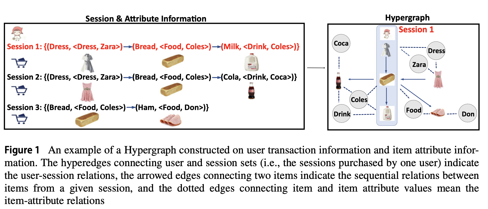

Abstract
目前大多数回话推荐通常仅根据回话内的依赖关系做预测，忽略了复杂的会话间关系和其它可获得的边信息（item属性，users）,限制了推荐系统的准确性。为了从会话信息和边信息中有效提取会话间和会话内的依赖，进一步提升下一个item预测的准确性，作者提出了一个新的超图学习框架。该框架包含三个模块： - 超图构造模块（hypergraph construction module），构造一个超图，以统一的方式将用户、项目和项目属性连接在一起。 - 超图学习模块（hypergraph learning module），通过提取构建超图中嵌入的会话内和会话间依赖项，学习每个 item 和 user 的信息潜在表示。 - 下一个item预测模块（next-item predection module)。讲学习到的表示送入预测模块用于推荐。
Introduction
two challenges : - ch1:
如何有效地充分利用可用的附带信息，包括项目属性信息和用户信息，以提高下一个项目建议的准确性？
- ch2:
如何有效地提取会话内和会话间的依赖关系，以进一步改进下一个项目的推荐？
针对ch1,作者同时引入item属性信息和user信息，以丰富下一个项目推荐的信息。为了有效地整合此类边信息，作者构建了一个超图，通过将基于会话的item-tiem图、item-item
attribute value
图和user-session图集成到统一的超图中，将项目、项目属性值和用户连接在一起。
针对ch2，对于会话内的依赖关系，作者将构建在每个会话上的每个子图转换为门控图神经网络，以了解会话内项目之间的依赖关系。对于会话间的依赖关系，作者设计了三种类型的聚合操作(user
aggregation,item aggregation,attribute
aggregation)，以了解会话间的依赖性，以吸收其他会话的信息，从而有利于当前会话的下一个item推荐。每个聚合都基于超图中的一种超边。
除此之外，作者还使用了session
agregation学习用户的偏好。具体来说，session
aggregation聚合用户的所有历史会话，以代表她/他的偏好.
